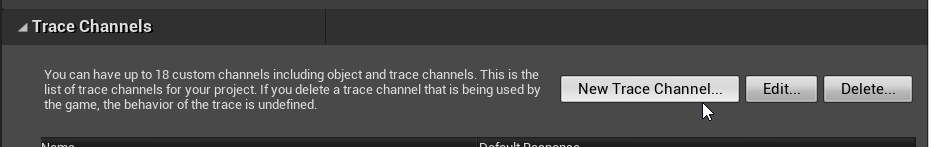
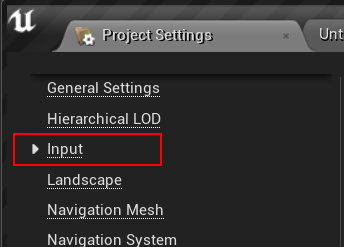
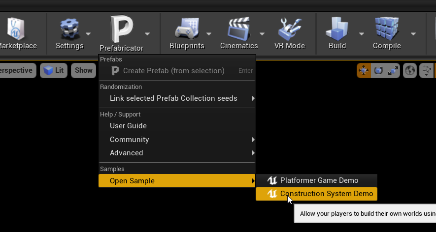
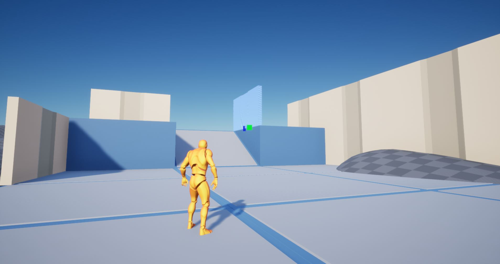

Project Settings¶
The Construction System requires a few Project Settings to be setup first
Collision¶
You’ll need to setup collision for the runtime build gameplay mode to work
Open the Project Settings by navigating to Edit > Project Settings
Select Collision category
Create Trace Channel¶
Create a New Trace Channel
Set the name to PrefabSnapChannel and set the Default Response to Ignore
Create Collision Profile¶
In that same page, create a new Collision Profile by clicking the New button under the Preset category
Input¶
Set the following input so the construction gameplay system can work. In the Project Settings page, select the Input category
Add the following Action Mappings
Command |
Key |
Description |
|---|---|---|
CSModeToggle |
E |
Toggle Build node On/Off |
CSToggleBuildUI |
Q |
Toggles Build UI to select a prefab |
CSModeToolBuild |
1 |
Build Tool |
CSModeToolRemove |
2 |
Remove Tool |
CSBuiltAtCursor |
Left Mouse Button |
Build prefab at cursor (Build Tool) |
CSRemoveAtCursor |
Left Mouse Button |
Remove prefab at cursor (Remove Tool) |
CSCursorItemNext |
X |
Next Prefab item from the cursor’s prefab collection |
CSCursorItemPrev |
Z |
Previous Prefab item from the cursor’s prefab collection |
Add the following Action Mappings
Command |
Key |
Description |
|---|---|---|
CSCursorRotate |
Middle Wheel Axis |
Rotate the cursor prefab while placement |
Explore the Construction System game sample:
 